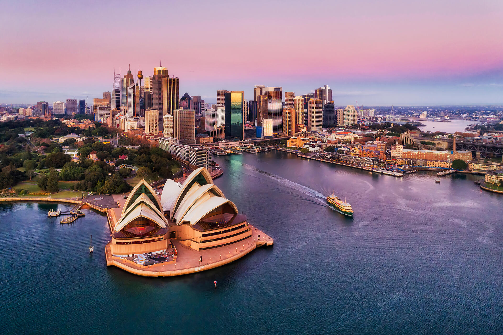
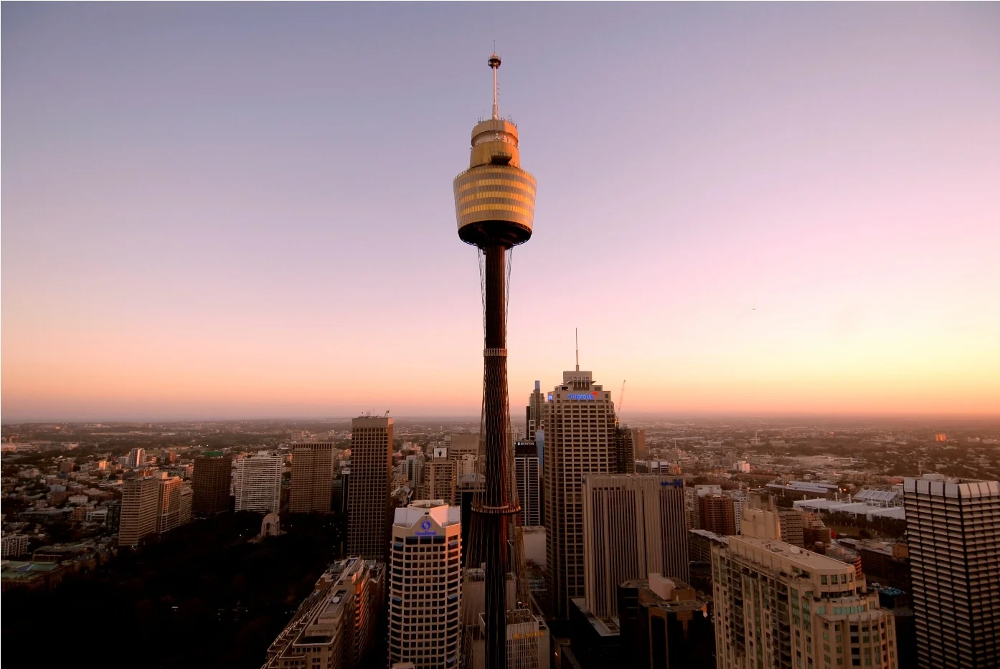
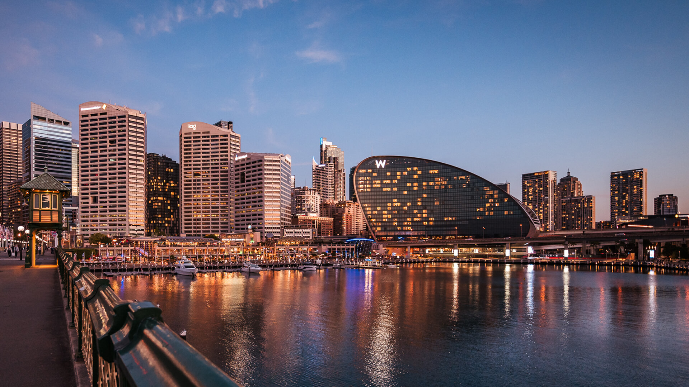

STRONA O ZABYTKACH
RZYM :::: LOS ANGELES :::: SYDNEY
SYDNEY

Sydney, największe miasto Australii, słynie z opery przypominającej żagle, ponad 100 plaż (w tym słynnej Bondi) i największego naturalnego portu na świecie, Port Jackson. Miasto jest tyglem kulturowym z ponad 200 narodowościami, a w grudniu Mikołajowie surfują tam na deskach. Co ciekawe, błędnie uważane jest za stolicę Australii. Sydney skupia wiele zagranicznych banków i korporacji międzynarodowych, a samo miasto jest promowane jako jeden z największych hubów finansowych w regionie Azji i Pacyfiku. Znajdują się tu trzy obiekty z listy światowego dziedzictwa UNESCO. W Sydney odbyły się Letnie Igrzyska Olimpijskie 2000.
SYDNEY OPERA HAUSE

Opera w Sydney to ikona architektury XX wieku, wpisana na listę UNESCO, której budowa trwała 14 lat (1959–1973), a koszt wzrósł z 7 do 102 mln dolarów. Jej dach przypominający żagle pokrywa ponad milion płytek ceramicznych, a w ponad 1000 pomieszczeniach znajdują się m.in. największe mechaniczne organy na świecie. Wewnątrz znajduje się ponad 1000 pomieszczeń, w tym pięć głównych sal koncertowych, a sam gmach zajmuje powierzchnię, na której zmieściłoby się osiem Boeingów 747.
SYDNEY TOWER EYE

Sydney Tower Eye to najwyższa wolnostojąca konstrukcja w Sydney (309 m), otwarta w 1981 r., znana też jako Centrepoint Tower. Oferuje 360-stopniowy widok na miasto i Góry Błękitne z wys. 250 m. Posiada taras widokowy, obrotowe restauracje i atrakcję Skywalk, czyli spacer po zewnętrznej platformie.Wieża mierzy 309 metrów do czubka iglicy, będąc najwyższym budynkiem w mieście i drugim co do wysokości na półkuli południowej.Charakterystyczna, złota część wieży (turret) ma 4 poziomy, w tym taras widokowy, dwie restauracje oraz poziomy telekomunikacyjne.
DARLING HARBOUR

Darling Harbour w Sydney to tętniące życiem, nowoczesne centrum rozrywki, które jeszcze w latach 80. XX wieku było zaniedbanym portem przemysłowym. Obecnie to ogromna strefa piesza z licznymi atrakcjami, w tym akwarium Sea Life, zoo Wild Life, Ogrodami Chińskimi oraz cyklicznymi pokazami sztucznych ogni. Dawny obszar przemysłowy i podmokły teren w latach 80. przekształcono w jedno z najważniejszych miejsc turystycznych w Australii. Charakterystycznym punktem jest ogromny młyn, z którego roztacza się widok na panoramę miasta.